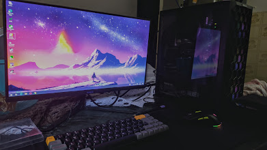

Olá! Eu me chamo Pedro Comper, tenho 18 anos e esta é minha pagina principal.
Meu objetivo profissional é ser um programador renomado e respeitado, estudo para alcançar esse renome e respeito.
Gosto de jogar jogos online, conversar e ouvir musica!
Estudei o fundamental 1 na escola UMEF Maria Luiza dos Santos Vellozo, fundamental 2 na escola UMEF Marina Barcellos Silveira, o meu ensino médio foi realizado na escola Fundação Bradesco, atualmente faço ciências da computação na UVV (Universidade de Vila Velha)
Participei da ESX, evento de tecnologia e inovação em Vitória - 2023
| Lógica para Computação |
|---|
| Contrução de Software para Web |
| Design e Desenvolvimento de Banco de Dados I |
| Experiência e Interface com o Usuário |
| Fundamentos de Tecnologia da Computação |
| Textos Científicos: Aspectos Metodológicos e Linguísticos |
Quero trabalhar como programador, de preferencia para uma empresa do exterior, ganhando em euro ou dolar, de forma 100% remota no Brasil.
| 📄Meu curriculo | 📞Meus Contatos | 😺Meu Github | 💼Meus Serviços |